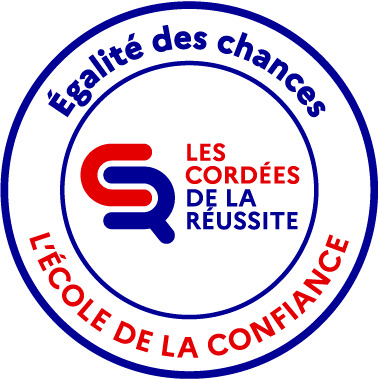

Les Cordées de la réussite sont un dispositif national visant à promouvoir l’égalité des chances en accompagnant des élèves de lycées professionnels dans la découverte des études supérieures.
Dans ce cadre, je me suis engagée dans le projet Égalité des chances en intervenant une fois par semaine durant l’année 2024–2025 au lycée professionnel Roland Garros à Toulouse.
J’ai assuré l’encadrement d’un groupe d’élèves de première autour de la découverte des formations post-bac, des métiers, du développement des compétences orales et du renforcement de la confiance en soi.
Au premier semestre de ma deuxième année d’école d’ingénieur, j’ai accompagné des étudiants de première année en dispensant des cours d’électronique de base, dans le but de les préparer aux examens et à la suite de leur parcours.